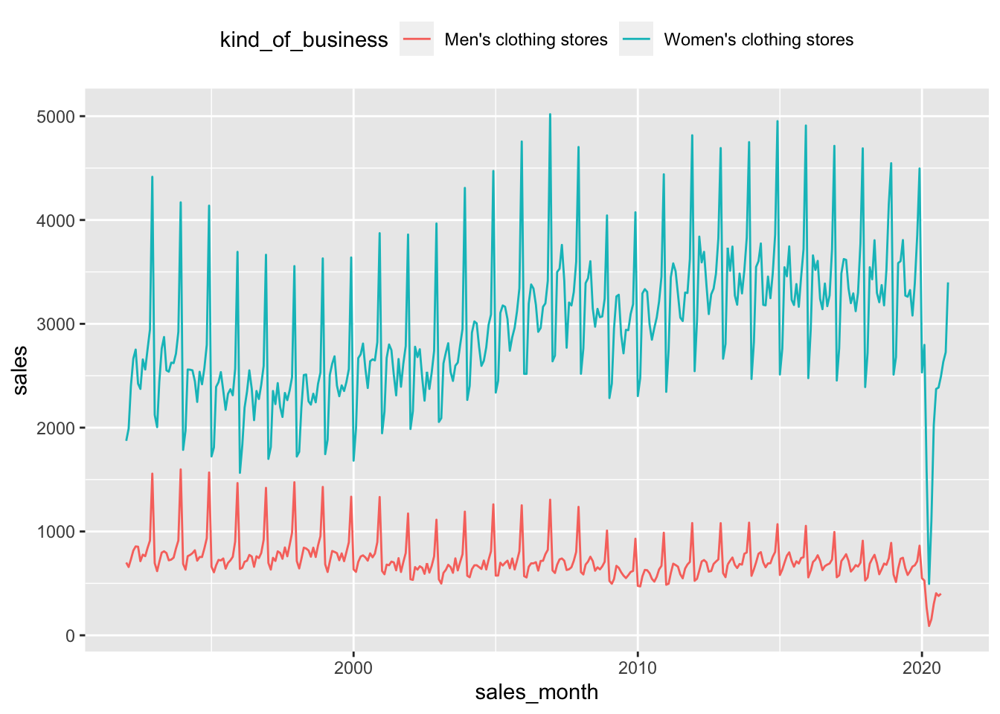

library(DBI)
library(tidyverse)
library(dbplyr)
library(knitr)3 Time Series Analysis
This chapter is really two chapters. The first part of the chapter discusses some finer details of dates, date-times, and time stamps. This material is important, but a little technical and bewildering wihtout some concrete use cases.
The second part of the chapter is where Tanimura (2021) really starts to take off. This is where it starts playing around with real data. A first-time reader could probably skip ahead to Section 3.2 without much loss.
db <- dbConnect(duckdb::duckdb())3.1 Date, Datetime, and Time Manipulations
INSTALL 'icu';
LOAD 'icu';3.1.1 Time Zone Conversions
Tanimura (2021) points out that often “timestamps in the database are not encoded with the time zone, and you will need to consult with the source or developer to figure out how your data was stored.” When pushing data to a PostgreSQL database, I use the timestamp with time zone type as much as possible.
Tanimura (2021) provides the following example, which is interesting because the west coast of the United States would not be on the PST time zone at that time of year. Instead, it would be on PDT.
SELECT timestamptz '2020-09-01 00:00:00 -0' AT TIME ZONE 'PST' AS time;| time |
|---|
| 2020-08-31 17:00:00 |
In PostgreSQL, we would get a different answer with the following query, but in DuckDB it seems that PDT is not recognized as a time zone abbreviation at all, so we just get the original UTC timestamp back.
SELECT timestamptz '2020-09-01 00:00:00 -0' AT TIME ZONE 'PDT' AS time;| time |
|---|
| 2020-09-01 |
I think most people barely know the difference between PST and PDT and even fewer would know the exact dates that one switches from one to the other. A better approach is to use a time zone that encodes information about when PDT is used and when PST is used. In PostgreSQL and DuckDB, the function pg_timezone_names() returns a table with the information that we need.
However, it seems that there are inconsistencies between PostgreSQL and DuckDB in terms of the abbreviations used. As such it’s probably safer to use the name form (e.g., US/Pacific) whenever possible. Given the widespread confusion about the meaning of terms like EST, EDT, and so on, just use US/Eastern, etc.
SELECT name, abbrev
FROM pg_timezone_names()
WHERE regexp_matches(name, '^US/');
-- use WHERE name ~ '^US/'; in PostgreSQL| name | abbrev |
|---|---|
| US/Alaska | AST |
| US/Aleutian | US/Aleutian |
| US/Arizona | PNT |
| US/Central | CST |
| US/East-Indiana | IET |
| US/Eastern | US/Eastern |
| US/Hawaii | US/Hawaii |
| US/Indiana-Starke | US/Indiana-Starke |
| US/Michigan | US/Michigan |
| US/Mountain | Navajo |
The following queries demonstrate that daylight savings information is encoded in the database.
SELECT '2020-09-01 17:00:01 US/Pacific'::timestamptz AS t1,
'2020-09-02 10:00:01 Australia/Melbourne'::timestamptz AS t2;| t1 | t2 |
|---|---|
| 2020-09-02 00:00:01 | 2020-09-02 00:00:01 |
SELECT '2020-12-01 16:00:01 US/Pacific'::timestamptz AS t1,
'2020-12-02 11:00:01 Australia/Melbourne'::timestamptz AS t2;| t1 | t2 |
|---|---|
| 2020-12-02 00:00:01 | 2020-12-02 00:00:01 |
sql <-
"(SELECT
'2020-12-01 16:00:01 US/Pacific'::timestamptz AS t1)"
a_time <- tbl(db, sql(sql))
a_time %>%
kable()| t1 |
|---|
| 2020-12-02 00:00:01 |
a_time_r <-
a_time %>%
select(t1) %>%
pull()
print(a_time_r, tz = "UTC")[1] "2020-12-02 00:00:01 UTC"print(a_time_r, tz = "US/Pacific")[1] "2020-12-01 16:00:01 PST"Sys.timezone()[1] "Australia/Melbourne"print(a_time_r, tz = Sys.timezone())[1] "2020-12-02 11:00:01 AEDT"The above examples illustrate a few key ideas.
First, while we supply the literal form '2020-09-01 17:00:01 US/Pacific'::timestamptz, it seems that once a variable has been encoded as TIMESTAMP WITH TIME ZONE, it behaves as though it is actually being stored as a timestamp in the UTC time zone, just with the displayed time perhaps being different.
Second, columns of type TIMESTAMP WITH TIME ZONE come into R with the associated time-zone information, which is what we want (especially if we will later put timestamp data back into PostgreSQL).
Third, we can see that we can choose to display information in a different time zone without changing the underlying data.
Some care is needed with timestamp data. I think the AT TIME ZONE queries provided in Tanimura (2021) are actually pretty dangerous, as can be seen in the following query. While we supply 2020-09-01 00:00:01 as UTC and then render it AT TIME ZONE 'US/Pacific', it turns out that the returned value is interpreted as a TIMESTAMP WITHOUT TIME ZONE and subsequent queries lead to confusing behaviour. In the query below, the second application of AT TIME ZONE interprets the TIMESTAMP WITHOUT TIME ZONE as though it came from the stated time zone and the results seem to have AT TIME ZONE doing the opposite of what it did when given a TIMESTAMP WITH TIME ZONE (as in the initial literal '2020-09-01 00:00:01 -0').
WITH q1 AS
(SELECT timestamptz '2020-09-01 00:00:01-00' AT TIME ZONE 'US/Pacific' AS t1,
timestamp '2020-09-01 00:00:01' AT TIME ZONE 'US/Pacific' AS t2)
SELECT
t1,
t1::varchar AS t1_char,
t1 AT TIME ZONE 'UTC' AS t3,
t2 AT TIME ZONE 'UTC' AS t4,
typeof(t1),
typeof(t2)
FROM q1| t1 | t1_char | t3 | t4 | typeof(t1) | typeof(t2) |
|---|---|---|---|---|---|
| 2020-08-31 17:00:01 | 2020-08-31 17:00:01 | 2020-08-31 17:00:01 | 2020-09-01 07:00:01 | TIMESTAMP | TIMESTAMP WITH TIME ZONE |
It seems that TIMESTAMP WITHOUT TIME ZONE values should be converted to a time zone as quickly as possible to avoid confusion and that care is needed with AT TIME ZONE given that it does very different (essentially opposite) things according to the supplied data type.
WITH q1 AS
(SELECT '2020-09-01 00:00:01-00'::timestamptz AS t1)
SELECT t1,
t1::varchar AS t2,
typeof(t1)
FROM q1| t1 | t2 | typeof(t1) |
|---|---|---|
| 2020-09-01 00:00:01 | 2020-09-01 10:00:01+10 | TIMESTAMP WITH TIME ZONE |
Strange behaviour can result from values stored as TIMESTAMP WITHOUT TIME ZONE. Below we see that t1 is printed as UTC no matter what, while the behaviour of t2 seems easier to understand.
sql <-
"(SELECT
'2020-12-01 00:00:01-00' AS t1,
'2020-12-01 00:00:01-00'::timestamptz AS t2)"
two_times_notz <- tbl(db, sql(sql))
two_times_notz %>% kable()| t1 | t2 |
|---|---|
| 2020-12-01 00:00:01-00 | 2020-12-01 00:00:01 |
two_times_notz_r <-
collect(two_times_notz)
print(two_times_notz_r$t1)[1] "2020-12-01 00:00:01-00"Sys.timezone()[1] "Australia/Melbourne"print(two_times_notz_r$t1, tz = Sys.timezone())[1] "2020-12-01 00:00:01-00"print(two_times_notz_r$t2)[1] "2020-12-01 00:00:01 UTC"Sys.timezone()[1] "Australia/Melbourne"print(two_times_notz_r$t2, tz = Sys.timezone())[1] "2020-12-01 11:00:01 AEDT"As pointed out by Tanimura (2021), one drawback to storing information as UTC is that localtime information may be lost. But it seems it would be more prudent to store information as TIMESTAMP WITH TIME ZONE and keep local time zone information as a separate column to avoid confusion. For example, if the orders table is stored as TIMESTAMP WITHOUT TIME ZONE based on the local time of the customer, which might be Australia/Melbourne and the shipping table uses TIMESTAMP WITH TIME ZONE, then an analyst of time-to-ship data would be confused by orders apparently being shipped before they are made. If shipping table uses TIMESTAMP WITH TIME ZONE using timestamps in the time zone of the East Bay warehouse (so US/Pacific), things would be even worse.
I think that fully fleshing out the issues here would require a separate chapter. In fact, nothing in the core part of Chapter 3 of Tanimura (2021) (which focuses on the retail_sales table) really uses timestamp information, so we can put these issues aside for now.
3.1.2 Date and Timestamp Format Conversions
As discussed in Tanimura (2021), PostgreSQL has a rich array of functions for converting dates and times and extracting such information as months and days of the week.
SELECT date_trunc('month','2020-10-04 12:33:35 -00'::timestamptz);| date_trunc(‘month’, CAST(‘2020-10-04 12:33:35 -00’ AS TIMESTAMP WITH TIME ZONE)) |
|---|
| 2020-09-30 14:00:00 |
One such function
a_time_df <- tbl(db, sql("(SELECT '2020-10-04 12:33:35'::timestamp AS a_time)"))
a_time_df %>%
mutate(a_trunced_time = date_trunc('month', a_time))# Source: SQL [1 x 2]
# Database: DuckDB 0.7.1 [igow@Darwin 22.5.0:R 4.2.2/:memory:]
a_time a_trunced_time
<dttm> <date>
1 2020-10-04 12:33:35 2020-10-01 a_time_df %>%
mutate(a_trunced_time = date_trunc('month', a_time)) %>%
show_query()<SQL>
SELECT *, date_trunc('month', a_time) AS a_trunced_time
FROM (SELECT '2020-10-04 12:33:35'::timestamp AS a_time)a_time_df %>%
collect()# A tibble: 1 × 1
a_time
<dttm>
1 2020-10-04 12:33:353.1.3 Date Math
3.1.4 Time Math
a_time_df <- tbl(db, sql("(SELECT '2020-10-04 12:33:35 US/Pacific'::timestamptz AS a_time)"))
a_time_df %>%
mutate(a_trunced_time = date_trunc('month', a_time)) # Source: SQL [1 x 2]
# Database: DuckDB 0.7.1 [igow@Darwin 22.5.0:R 4.2.2/:memory:]
a_time a_trunced_time
<dttm> <dttm>
1 2020-10-04 19:33:35 2020-09-30 14:00:00a_time_df %>%
mutate(a_trunced_time = date_trunc('month', a_time)) %>%
show_query()<SQL>
SELECT *, date_trunc('month', a_time) AS a_trunced_time
FROM (SELECT '2020-10-04 12:33:35 US/Pacific'::timestamptz AS a_time)a_time_df %>%
collect()# A tibble: 1 × 1
a_time
<dttm>
1 2020-10-04 19:33:35a_time_df %>%
mutate(new_time = a_time + sql("interval '3 hours'")) %>%
collect()# A tibble: 1 × 2
a_time new_time
<dttm> <dttm>
1 2020-10-04 19:33:35 2020-10-04 22:33:353.1.5 Joining Data from Different Sources
3.2 The Retail Sales Data Set
As discussed in Tanimura (2021), the data set used in this chapter comes from the website of the US Census Bureau. The data set is a little messy, but not too large, so we can easily grab it directly from the website and clean it up in much the same way that Cathy has done for us.
library(tidyverse)
library(readxl)
# Use tmpdir = "." or known directory if you have trouble with
# this part.
mrtssales <- tempfile(fileext = ".xlsx")
url <- paste0("https://www.census.gov/retail/mrts/www/",
"mrtssales92-present.xlsx")
download.file(url, mrtssales)
read_tab <- function(year) {
# Initially we read all columns as text, as we want to process
# more precise than read_excel() would do unsupervised.
temp <- read_excel(mrtssales,
range = "A4:N71",
sheet = as.character(year),
col_types = "text",
col_names = paste0("v", 1:14))
# The third row has the dates for columns 3:14
names(temp) <- c("naics_code", "kind_of_business",
as.character(temp[2, 3:14]))
# The actual data are found after row 3
temp <- temp[-1:-3, ]
# Now pivot the data and convert sales to numeric values.
# Also convert sales_month to dates (start of respective month).
df <-
temp %>%
pivot_longer(names_to = "sales_month",
values_to = "sales",
cols = -1:-2) %>%
mutate(sales_month = paste("01", str_remove(sales_month, "\\.")),
sales_month = as.Date(sales_month, "%d %b %Y")) %>%
mutate(reason_for_null = case_when(sales == "(NA)" ~ "Not Available",
sales == "(S)" ~ "Supressed",
TRUE ~ NA),
sales = case_when(sales == "(NA)" ~ NA,
sales == "(S)" ~ NA,
TRUE ~ sales)) %>%
mutate(sales = as.double(sales)) %>%
select(sales_month, naics_code, kind_of_business,
reason_for_null, sales)
df
}
retail_sales_local <- bind_rows(lapply(1992:2020, read_tab)) Alternatively, we could just grab a CSV file from the GitHub repository for Tanimura (2021).
url <- paste0("https://raw.githubusercontent.com/",
"cathytanimura/sql_book/master/",
"Chapter%203%3A%20Time%20Series%20Analysis/",
"us_retail_sales.csv")
retail_sales_local <- read_csv(url, show_col_types = FALSE)Note that there are differences between the two versions of retail_sales_local above, as US Census economic data is continually being revised even after being released.
Now that we have the data in R, a few questions arise.
First, why would we move it to a database? Second, how can we move it to a database? Related to the previous question will be: which database to we want to move it to?
Taking these questions in turn, the first one is a good question. With retail_sales as a local data frame, we can run almost all the analyses below with only the slightest modifications. The modifications needed are to replace every instance of window_order() with arrange().1 The “almost all” relates to the moving average, which relies on window_frame() from dbplyr, which has no exact equivalent in dplyr.
So the first point is that “almost all” implies an advantage for using dbplyr. On occasion, the SQL engine provided by PostgreSQL will allow us to do some data manipulations more easily than we can in R. But of course, there are many cases when the opposite is true. That said, why not have both? Store data in a database and collect() as necessary to do things that R is better at?
Second, performance can be better using SQL. Compiling a version of this chapter using dplyr with a local data frame for the remainder took just under 14 seconds. Using a PostgreSQL backend, it took 8.5 seconds. Adding back in the queries with window_order() that I removed so that I could compile with dplyr and using DuckDB as the backend, the document took 8.3 seconds to compile (this beat out PostgreSQL doing the same in 9.6 seconds). While these differences are not practically very significant, they could be with more demanding tasks. Also, a database will not always beat R or Python for performance, but often will and having the option to use a database backend is a good thing.
Third, having the data in a database allows you to interrogate the data using SQL. If you are more familiar with SQL, or just know how to do a particular task in SQL, this can be beneficial.2
Fourth, I think there is merit in separating the tasks of acquiring and cleaning data from the task of analysing those data. Many data analysts have a work flow that entails ingesting and cleaning data for each analysis task. My experience is that it is often better to do the ingesting and cleaning once and then reuse the cleaned data in subsequent analyses. A common pattern involves reusing the same data in many analyses and it can be helpful to divide the tasks in a way that using an SQL database encourages. Also the skills in ingesting and cleaning data can be different from those for analysing those data, so sometimes it makes sense for one person to do one task, push the data to a database, and then have someone else do some or all of the analysis.
Regarding the second question, there are a few options. But for this chapter we will use duckdb
To install DuckDB, all we have to do is install.packages("duckdb").
Then we can create a connection as follows.
db <- dbConnect(duckdb::duckdb())Here we use the default of an in-memory database. At the end of this chapter, we discuss how we could store the data in a file (say, legislators.duckdb) if we want persistent storage.
retail_sales <- copy_to(db, retail_sales_local, "retail_sales")3.3 Trending the Data
3.3.1 Simple Trends
SELECT sales_month, sales
FROM retail_sales
WHERE kind_of_business = 'Retail and food services sales, total'
ORDER BY 1| sales_month | sales |
|---|---|
| 1992-01-01 | 146376 |
| 1992-02-01 | 147079 |
| 1992-03-01 | 159336 |
| 1992-04-01 | 163669 |
| 1992-05-01 | 170068 |
| 1992-06-01 | 168663 |
| 1992-07-01 | 169890 |
| 1992-08-01 | 170364 |
| 1992-09-01 | 164617 |
| 1992-10-01 | 173655 |
retail_sales %>%
filter(kind_of_business == 'Retail and food services sales, total') %>%
select(sales_month, sales) %>%
ggplot(aes(x = sales_month, y = sales)) +
geom_line()
SELECT date_part('year',sales_month) as sales_year,
sum(sales) as sales
FROM retail_sales
WHERE kind_of_business = 'Retail and food services sales, total'
GROUP BY 1
;| sales_year | sales |
|---|---|
| 1992 | 2014102 |
| 1993 | 2153095 |
| 1994 | 2330235 |
| 1995 | 2450628 |
| 1996 | 2603794 |
| 1997 | 2726131 |
| 1998 | 2852956 |
| 1999 | 3086990 |
| 2000 | 3287537 |
| 2001 | 3378906 |
retail_sales %>%
filter(kind_of_business == 'Retail and food services sales, total') %>%
mutate(sales_year = year(sales_month)) %>%
group_by(sales_year) %>%
summarize(sales = sum(sales, na.rm = TRUE)) %>%
ggplot(aes(x = sales_year, y = sales)) +
geom_line()SELECT date_part('year',sales_month) as sales_year,
kind_of_business, sum(sales) as sales
FROM retail_sales
WHERE kind_of_business IN
('Book stores',
'Sporting goods stores',
'Hobby, toy, and game stores')
GROUP BY 1,2
ORDER BY 1;| sales_year | kind_of_business | sales |
|---|---|---|
| 1992 | Book stores | 8327 |
| 1992 | Sporting goods stores | 15583 |
| 1992 | Hobby, toy, and game stores | 11251 |
| 1993 | Book stores | 9108 |
| 1993 | Sporting goods stores | 16791 |
| 1993 | Hobby, toy, and game stores | 11651 |
| 1994 | Book stores | 10107 |
| 1994 | Sporting goods stores | 18825 |
| 1994 | Hobby, toy, and game stores | 12850 |
| 1995 | Book stores | 11196 |
3.3.2 Comparing Components
retail_sales %>%
filter(kind_of_business %in%
c('Book stores',
'Sporting goods stores',
'Hobby, toy, and game stores')) %>%
mutate(sales_year = year(sales_month)) %>%
group_by(sales_year, kind_of_business) %>%
summarize(sales = sum(sales, na.rm = TRUE), .groups = "drop") %>%
ggplot(aes(x = sales_year, y = sales, color = kind_of_business)) +
geom_line() +
theme(legend.position = "top")
SELECT sales_month, kind_of_business, sales
FROM retail_sales
WHERE kind_of_business IN ('Men''s clothing stores','Women''s clothing stores')
ORDER BY 1,2;| sales_month | kind_of_business | sales |
|---|---|---|
| 1992-01-01 | Men’s clothing stores | 701 |
| 1992-01-01 | Women’s clothing stores | 1873 |
| 1992-02-01 | Men’s clothing stores | 658 |
| 1992-02-01 | Women’s clothing stores | 1991 |
| 1992-03-01 | Men’s clothing stores | 731 |
| 1992-03-01 | Women’s clothing stores | 2403 |
| 1992-04-01 | Men’s clothing stores | 816 |
| 1992-04-01 | Women’s clothing stores | 2665 |
| 1992-05-01 | Men’s clothing stores | 856 |
| 1992-05-01 | Women’s clothing stores | 2752 |
retail_sales %>%
filter(kind_of_business %in% c("Men's clothing stores",
"Women's clothing stores")) %>%
select(sales_month, kind_of_business, sales) %>%
ggplot(aes(x = sales_month, y = sales, color = kind_of_business)) +
geom_line() +
theme(legend.position = "top")
SELECT date_part('year',sales_month) as sales_year,
kind_of_business, sum(sales) as sales
FROM retail_sales
WHERE kind_of_business IN
('Men''s clothing stores',
'Women''s clothing stores')
GROUP BY 1, 2
ORDER BY 1, 2;| sales_year | kind_of_business | sales |
|---|---|---|
| 1992 | Men’s clothing stores | 10179 |
| 1992 | Women’s clothing stores | 31815 |
| 1993 | Men’s clothing stores | 9962 |
| 1993 | Women’s clothing stores | 32350 |
| 1994 | Men’s clothing stores | 10032 |
| 1994 | Women’s clothing stores | 30585 |
| 1995 | Men’s clothing stores | 9315 |
| 1995 | Women’s clothing stores | 28696 |
| 1996 | Men’s clothing stores | 9546 |
| 1996 | Women’s clothing stores | 28238 |
retail_sales %>%
filter(kind_of_business %in%
c("Men's clothing stores",
"Women's clothing stores")) %>%
mutate(sales_year = year(sales_month)) %>%
group_by(sales_year, kind_of_business) %>%
summarize(sales = sum(sales, na.rm = TRUE), .groups = "drop") %>%
ggplot(aes(x = sales_year, y = sales, color = kind_of_business)) +
geom_line() +
theme(legend.position = "top")
SELECT date_part('year', sales_month) AS sales_year,
sum(CASE WHEN kind_of_business = 'Women''s clothing stores'
then sales
END) AS womens_sales,
sum(CASE WHEN kind_of_business = 'Men''s clothing stores'
then sales
END) AS mens_sales
FROM retail_sales
WHERE kind_of_business IN
('Men''s clothing stores',
'Women''s clothing stores')
GROUP BY 1
ORDER BY 1;| sales_year | womens_sales | mens_sales |
|---|---|---|
| 1992 | 31815 | 10179 |
| 1993 | 32350 | 9962 |
| 1994 | 30585 | 10032 |
| 1995 | 28696 | 9315 |
| 1996 | 28238 | 9546 |
| 1997 | 27822 | 10069 |
| 1998 | 28332 | 10196 |
| 1999 | 29549 | 9667 |
| 2000 | 31447 | 9507 |
| 2001 | 31453 | 8625 |
pivoted_sales <-
retail_sales %>%
filter(kind_of_business %in%
c("Men's clothing stores",
"Women's clothing stores")) %>%
mutate(kind_of_business = if_else(kind_of_business == "Women's clothing stores",
"womens", "mens"),
sales_year = year(sales_month)) %>%
group_by(sales_year, kind_of_business) %>%
summarize(sales = sum(sales, na.rm = TRUE), .groups = "drop") %>%
pivot_wider(id_cols = "sales_year",
names_from = "kind_of_business",
names_glue = "{kind_of_business}_{.value}",
values_from = "sales")
pivoted_sales %>%
show_query()<SQL>
SELECT
sales_year,
MAX(CASE WHEN (kind_of_business = 'mens') THEN sales END) AS mens_sales,
MAX(CASE WHEN (kind_of_business = 'womens') THEN sales END) AS womens_sales
FROM (
SELECT sales_year, kind_of_business, SUM(sales) AS sales
FROM (
SELECT
sales_month,
naics_code,
CASE WHEN (kind_of_business = 'Women''s clothing stores') THEN 'womens' WHEN NOT (kind_of_business = 'Women''s clothing stores') THEN 'mens' END AS kind_of_business,
reason_for_null,
sales,
EXTRACT(year FROM sales_month) AS sales_year
FROM retail_sales
WHERE (kind_of_business IN ('Men''s clothing stores', 'Women''s clothing stores'))
) q01
GROUP BY sales_year, kind_of_business
) q02
GROUP BY sales_yearpivoted_sales %>%
arrange(sales_year) %>%
collect(n = 10) %>%
kable()| sales_year | mens_sales | womens_sales |
|---|---|---|
| 1992 | 10179 | 31815 |
| 1993 | 9962 | 32350 |
| 1994 | 10032 | 30585 |
| 1995 | 9315 | 28696 |
| 1996 | 9546 | 28238 |
| 1997 | 10069 | 27822 |
| 1998 | 10196 | 28332 |
| 1999 | 9667 | 29549 |
| 2000 | 9507 | 31447 |
| 2001 | 8625 | 31453 |
pivoted_sales %>%
filter(sales_year <= 2019) %>%
group_by(sales_year) %>%
mutate(womens_minus_mens = womens_sales - mens_sales,
mens_minus_womens = mens_sales - womens_sales) %>%
select(sales_year, womens_minus_mens, mens_minus_womens) %>%
ggplot(aes(y = womens_minus_mens, x = sales_year)) +
geom_line()pivoted_sales %>%
filter(sales_year <= 2019) %>%
group_by(sales_year) %>%
mutate(womens_times_of_mens = womens_sales / mens_sales) %>%
ggplot(aes(y = womens_times_of_mens, x = sales_year)) +
geom_line()pivoted_sales %>%
filter(sales_year <= 2019) %>%
group_by(sales_year) %>%
mutate(womens_pct_of_mens = (womens_sales / mens_sales - 1) * 100) %>%
ggplot(aes(y = womens_pct_of_mens, x = sales_year)) +
geom_line()
3.3.3 Percent of Total Calculations
retail_sales %>%
filter(kind_of_business %in%
c("Men's clothing stores",
"Women's clothing stores")) %>%
group_by(sales_month) %>%
mutate(total_sales = sum(sales, na.rm = TRUE)) %>%
ungroup() %>%
mutate(pct_total_sales = sales * 100 / total_sales) %>%
select(sales_month, kind_of_business, pct_total_sales) %>%
collect(n = 3) %>%
kable()| sales_month | kind_of_business | pct_total_sales |
|---|---|---|
| 1992-06-01 | Men’s clothing stores | 26.02991 |
| 1992-06-01 | Women’s clothing stores | 73.97009 |
| 1992-08-01 | Men’s clothing stores | 22.62667 |
retail_sales %>%
filter(kind_of_business %in%
c("Men's clothing stores",
"Women's clothing stores")) %>%
group_by(sales_month) %>%
mutate(total_sales = sum(sales, na.rm = TRUE)) %>%
ungroup() %>%
mutate(pct_total_sales = sales * 100 / total_sales) %>%
show_query()<SQL>
SELECT *, (sales * 100.0) / total_sales AS pct_total_sales
FROM (
SELECT *, SUM(sales) OVER (PARTITION BY sales_month) AS total_sales
FROM retail_sales
WHERE (kind_of_business IN ('Men''s clothing stores', 'Women''s clothing stores'))
) q01retail_sales %>%
filter(kind_of_business %in%
c("Men's clothing stores",
"Women's clothing stores")) %>%
group_by(sales_month) %>%
mutate(total_sales = sum(sales, na.rm = TRUE)) %>%
ungroup() %>%
mutate(pct_total_sales = sales * 100 / total_sales) %>%
ggplot(aes(y = pct_total_sales, x = sales_month, color = kind_of_business)) +
geom_line()
3.3.4 Indexing to See Percent Change over Time
retail_sales %>%
filter(kind_of_business == "Women's clothing stores") %>%
mutate(sales_year = year(sales_month)) %>%
group_by(sales_year) %>%
summarize(sales = sum(sales, na.rm = TRUE)) %>%
ungroup() %>%
window_order(sales_year) %>%
mutate(index_sales = first(sales),
pct_from_index = (sales/index_sales - 1) * 100) %>%
collect(n = 3) %>%
kable()| sales_year | sales | index_sales | pct_from_index |
|---|---|---|---|
| 1992 | 31815 | 31815 | 0.000000 |
| 1993 | 32350 | 31815 | 1.681597 |
| 1994 | 30585 | 31815 | -3.866101 |
retail_sales %>%
filter(kind_of_business %in% c("Women's clothing stores",
"Men's clothing stores"),
sales_month <= '2019-12-31') %>%
mutate(sales_year = year(sales_month)) %>%
group_by(kind_of_business, sales_year) %>%
summarize(sales = sum(sales, na.rm = TRUE), .groups = "drop") %>%
group_by(kind_of_business) %>%
window_order(sales_year) %>%
mutate(index_sales = first(sales),
pct_from_index = (sales/index_sales - 1) * 100) %>%
ungroup() %>%
ggplot(aes(y = pct_from_index, x = sales_year, color = kind_of_business)) +
geom_line()3.4 Rolling Time Windows
3.4.1 Calculating Rolling Time Windows
mvg_avg <-
retail_sales %>%
filter(kind_of_business == "Women's clothing stores") %>%
window_order(sales_month) %>%
window_frame(-11, 0) %>%
mutate(moving_avg = mean(sales, na.rm = TRUE),
records_count = n()) %>%
filter(sales_month >= '1993-01-01')
mvg_avg %>%
select(sales_month, moving_avg, records_count) %>%
collect(n = 3) %>%
kable(digits = 2)| sales_month | moving_avg | records_count |
|---|---|---|
| 1993-01-01 | 2672.08 | 12 |
| 1993-02-01 | 2673.25 | 12 |
| 1993-03-01 | 2676.50 | 12 |
mvg_avg %>%
ggplot(aes(x = sales_month)) +
geom_line(aes(y = sales, colour = "Sales")) +
geom_line(aes(y = moving_avg, colour = "Moving average")) 
SELECT
sales_month,
avg(sales) over w AS moving_avg,
count(sales) over w AS records_count
FROM retail_sales
WHERE kind_of_business = 'Women''s clothing stores'
WINDOW w AS (order by sales_month
rows between 11 preceding and current row)| sales_month | moving_avg | records_count |
|---|---|---|
| 1992-01-01 | 1873.000 | 1 |
| 1992-02-01 | 1932.000 | 2 |
| 1992-03-01 | 2089.000 | 3 |
| 1992-04-01 | 2233.000 | 4 |
| 1992-05-01 | 2336.800 | 5 |
| 1992-06-01 | 2351.333 | 6 |
| 1992-07-01 | 2354.429 | 7 |
| 1992-08-01 | 2392.250 | 8 |
| 1992-09-01 | 2410.889 | 9 |
| 1992-10-01 | 2445.300 | 10 |
retail_sales %>%
filter(kind_of_business == "Women's clothing stores") %>%
window_order(sales_month) %>%
window_frame(-11, 0) %>%
mutate(moving_avg = mean(sales, na.rm = TRUE),
records_count = n()) %>%
select(sales_month, moving_avg, records_count) %>%
collect(n = 10) %>%
kable()date_dim <-
tibble(date = seq(as.Date('1993-01-01'),
as.Date('2020-12-01'),
by = "1 month")) %>%
copy_to(db, ., overwrite = TRUE, name = "date_dim")WITH jan_jul AS (
SELECT sales_month, sales
FROM retail_sales
WHERE kind_of_business = 'Women''s clothing stores'
AND date_part('month', sales_month) IN (1, 7))
SELECT a.date, b.sales_month, b.sales
FROM date_dim a
INNER JOIN jan_jul b
ON b.sales_month BETWEEN a.date - interval '11 months' AND a.date
WHERE a.date BETWEEN '1993-01-01' AND '2020-12-01';| date | sales_month | sales |
|---|---|---|
| 1993-01-01 | 1992-07-01 | 2373 |
| 1993-02-01 | 1992-07-01 | 2373 |
| 1993-03-01 | 1992-07-01 | 2373 |
| 1993-04-01 | 1992-07-01 | 2373 |
| 1993-05-01 | 1992-07-01 | 2373 |
| 1993-06-01 | 1992-07-01 | 2373 |
| 1993-01-01 | 1993-01-01 | 2123 |
| 1993-02-01 | 1993-01-01 | 2123 |
| 1993-03-01 | 1993-01-01 | 2123 |
| 1993-04-01 | 1993-01-01 | 2123 |
jan_jul <-
retail_sales %>%
filter(kind_of_business == "Women's clothing stores",
month(sales_month) %in% c(1, 7)) %>%
select(sales_month, sales)
date_dim %>%
mutate(date_start = date - months(11)) %>%
inner_join(jan_jul,
join_by(between(y$sales_month, x$date_start, x$date))) %>%
select(date, sales_month, sales) %>%
collect(n = 3) %>%
kable()| date | sales_month | sales |
|---|---|---|
| 1993-01-01 | 1992-07-01 | 2373 |
| 1993-02-01 | 1992-07-01 | 2373 |
| 1993-03-01 | 1992-07-01 | 2373 |
date_dim %>%
mutate(date_start = date - months(11)) %>%
inner_join(jan_jul,
join_by(between(y$sales_month, x$date_start, x$date))) %>%
group_by(date) %>%
summarize(moving_avg = mean(sales, na.rm = TRUE),
records = n()) %>%
collect(n = 3) %>%
kable()| date | moving_avg | records |
|---|---|---|
| 1993-01-01 | 2248 | 2 |
| 1993-02-01 | 2248 | 2 |
| 1993-03-01 | 2248 | 2 |
WITH sales_months AS (
SELECT distinct sales_month
FROM retail_sales
WHERE sales_month between '1993-01-01' and '2020-12-01')
SELECT a.sales_month, avg(b.sales) as moving_avg
FROM sales_months a
JOIN retail_sales b
on b.sales_month between
a.sales_month - interval '11 months' and a.sales_month
and b.kind_of_business = 'Women''s clothing stores'
GROUP BY 1
ORDER BY 1
LIMIT 3;| sales_month | moving_avg |
|---|---|
| 1993-01-01 | 2672.083 |
| 1993-02-01 | 2673.250 |
| 1993-03-01 | 2676.500 |
sales_months <-
retail_sales %>%
filter(between(sales_month,
as.Date('1993-01-01'),
as.Date('2020-12-01'))) %>%
distinct(sales_month)
sales_months %>%
mutate(month_start = sales_month - months(11)) %>%
inner_join(retail_sales,
join_by(between(y$sales_month, x$month_start, x$sales_month)),
suffix = c("", "_y")) %>%
filter(kind_of_business == "Women's clothing stores") %>%
group_by(sales_month) %>%
summarize(moving_avg = mean(sales, na.rm = TRUE)) %>%
arrange(sales_month) %>%
collect(n = 3) %>%
kable()| sales_month | moving_avg |
|---|---|
| 1993-01-01 | 2672.083 |
| 1993-02-01 | 2673.250 |
| 1993-03-01 | 2676.500 |
3.4.2 Calculating Cumulative Values
SELECT sales_month, sales,
sum(sales) OVER w AS sales_ytd
FROM retail_sales
WHERE kind_of_business = 'Women''s clothing stores'
WINDOW w AS (PARTITION BY date_part('year', sales_month)
ORDER BY sales_month)
LIMIT 3;| sales_month | sales | sales_ytd |
|---|---|---|
| 2017-01-01 | 2454 | 2454 |
| 2017-02-01 | 2763 | 5217 |
| 2017-03-01 | 3485 | 8702 |
ytd_sales <-
retail_sales %>%
filter(kind_of_business == "Women's clothing stores") %>%
mutate(year = year(sales_month)) %>%
group_by(year) %>%
window_order(sales_month) %>%
mutate(sales_ytd = cumsum(sales)) %>%
ungroup() %>%
select(sales_month, sales, sales_ytd)
ytd_sales %>%
filter(month(sales_month) %in% c(1:3, 12)) %>%
collect(n = 6) %>%
kable()| sales_month | sales | sales_ytd |
|---|---|---|
| 2017-01-01 | 2454 | 2454 |
| 2019-01-01 | 2511 | 2511 |
| 2017-02-01 | 2763 | 5217 |
| 2019-02-01 | 2680 | 5191 |
| 2017-03-01 | 3485 | 8702 |
| 2019-03-01 | 3585 | 8776 |
factor <- 40/4.5
ytd_sales %>%
filter(year(sales_month) %in% 2016:2020) %>%
ggplot(aes(x = sales_month, y = sales_ytd)) +
geom_bar(stat = "identity") +
geom_line(aes(y = sales * factor, colour = I("blue"))) +
scale_y_continuous(
"Sales YTD",
sec.axis = sec_axis(~ . / factor, name = "Monthly Sales")
)
SELECT a.sales_month, a.sales,
sum(b.sales) AS sales_ytd
FROM retail_sales a
INNER JOIN retail_sales b ON
date_part('year',a.sales_month) = date_part('year',b.sales_month)
AND b.sales_month <= a.sales_month
AND b.kind_of_business = 'Women''s clothing stores'
WHERE a.kind_of_business = 'Women''s clothing stores'
GROUP BY 1,2;| sales_month | sales | sales_ytd |
|---|---|---|
| 1992-12-01 | 4416 | 31815 |
| 1993-12-01 | 4170 | 32350 |
| 1992-11-01 | 2946 | 27399 |
| 1993-11-01 | 2923 | 28180 |
| 1992-10-01 | 2755 | 24453 |
| 1993-10-01 | 2713 | 25257 |
| 1992-09-01 | 2560 | 21698 |
| 1993-09-01 | 2622 | 22544 |
| 1992-08-01 | 2657 | 19138 |
| 1993-08-01 | 2626 | 19922 |
retail_sales_yr <-
retail_sales %>%
mutate(year = year(sales_month))
retail_sales_yr %>%
filter(kind_of_business == "Women's clothing stores") %>%
inner_join(retail_sales_yr,
join_by(year, kind_of_business,
sales_month >= sales_month),
suffix = c("", "_y")) %>%
group_by(sales_month, sales) %>%
summarize(sales_ytd = sum(sales_y, na.rm = TRUE),
.groups = "drop") %>%
filter(month(sales_month) %in% c(1:3, 12)) %>%
collect(n = 6) %>%
kable()| sales_month | sales | sales_ytd |
|---|---|---|
| 1992-02-01 | 1991 | 3864 |
| 1993-02-01 | 2005 | 4128 |
| 1994-02-01 | 1970 | 3756 |
| 1992-03-01 | 2403 | 6267 |
| 1993-03-01 | 2442 | 6570 |
| 1994-03-01 | 2560 | 6316 |
3.5 Analyzing with Seasonality
retail_sales %>%
filter(kind_of_business %in% c("Jewelry stores",
"Book stores",
"Grocery stores")) %>%
ggplot(aes(x = sales_month, y = sales)) +
geom_line() +
facet_wrap(vars(kind_of_business), nrow = 3, scales = "free")
3.5.1 Period-over-Period Comparisons: YoY and MoM
SELECT kind_of_business, sales_month, sales,
lag(sales_month) OVER w AS prev_month,
lag(sales) OVER w AS prev_month_sales
FROM retail_sales
WHERE kind_of_business = 'Book stores'
WINDOW w AS (PARTITION BY kind_of_business ORDER BY sales_month)| kind_of_business | sales_month | sales | prev_month | prev_month_sales |
|---|---|---|---|---|
| Book stores | 1992-01-01 | 790 | NA | NA |
| Book stores | 1992-02-01 | 539 | 1992-01-01 | 790 |
| Book stores | 1992-03-01 | 535 | 1992-02-01 | 539 |
| Book stores | 1992-04-01 | 523 | 1992-03-01 | 535 |
| Book stores | 1992-05-01 | 552 | 1992-04-01 | 523 |
| Book stores | 1992-06-01 | 589 | 1992-05-01 | 552 |
| Book stores | 1992-07-01 | 592 | 1992-06-01 | 589 |
| Book stores | 1992-08-01 | 894 | 1992-07-01 | 592 |
| Book stores | 1992-09-01 | 861 | 1992-08-01 | 894 |
| Book stores | 1992-10-01 | 645 | 1992-09-01 | 861 |
books_w_lag <-
retail_sales %>%
filter(kind_of_business == 'Book stores') %>%
group_by(kind_of_business) %>%
window_order(sales_month) %>%
mutate(prev_month = lag(sales_month),
prev_month_sales = lag(sales)) %>%
select(kind_of_business,
sales_month, sales,
prev_month, prev_month_sales)
books_w_lag %>%
collect(n = 3) %>%
kable()| kind_of_business | sales_month | sales | prev_month | prev_month_sales |
|---|---|---|---|---|
| Book stores | 1992-01-01 | 790 | NA | NA |
| Book stores | 1992-02-01 | 539 | 1992-01-01 | 790 |
| Book stores | 1992-03-01 | 535 | 1992-02-01 | 539 |
books_monthly <-
books_w_lag %>%
mutate(pct_growth = (sales / prev_month_sales - 1) * 100) %>%
select(-prev_month, -prev_month_sales)books_yearly <-
retail_sales %>%
filter(kind_of_business == 'Book stores') %>%
mutate(sales_year = year(sales_month)) %>%
group_by(sales_year) %>%
summarize(yearly_sales = sum(sales, na.rm = TRUE),
.groups = "drop") %>%
window_order(sales_year) %>%
mutate(prev_year_sales = lag(yearly_sales),
pct_growth = (yearly_sales/prev_year_sales - 1) * 100)
books_yearly %>%
collect(n = 3) %>%
kable(digits = 2)| sales_year | yearly_sales | prev_year_sales | pct_growth |
|---|---|---|---|
| 1992 | 8327 | NA | NA |
| 1993 | 9108 | 8327 | 9.38 |
| 1994 | 10107 | 9108 | 10.97 |
books_monthly %>%
filter(!is.na(pct_growth)) %>%
ggplot(aes(x = sales_month, y = pct_growth)) +
geom_line()3.5.2 Period-over-Period Comparisons: Same Month Versus Last Year
books_lagged_year_month <-
retail_sales %>%
filter(kind_of_business == 'Book stores') %>%
mutate(month = month(sales_month)) %>%
group_by(month) %>%
window_order(sales_month) %>%
mutate(prev_year_month = lag(sales_month),
prev_year_sales = lag(sales)) %>%
ungroup() %>%
select(sales_month, sales, prev_year_month, prev_year_sales)
books_lagged_year_month %>%
filter(month(sales_month) <= 2,
year(sales_month) <= 1994) %>%
arrange(sales_month) %>%
collect(n = 6) %>%
kable()| sales_month | sales | prev_year_month | prev_year_sales |
|---|---|---|---|
| 1992-01-01 | 790 | NA | NA |
| 1992-02-01 | 539 | NA | NA |
| 1993-01-01 | 998 | 1992-01-01 | 790 |
| 1993-02-01 | 568 | 1992-02-01 | 539 |
| 1994-01-01 | 1053 | 1993-01-01 | 998 |
| 1994-02-01 | 635 | 1993-02-01 | 568 |
books_lagged_year_month %>%
mutate(dollar_diff = sales - prev_year_sales,
pct_diff = dollar_diff/prev_year_sales * 100) %>%
select(-prev_year_month, -prev_year_sales) %>%
filter(month(sales_month) == 1) %>%
collect(n = 3) %>%
kable(digits = 2)| sales_month | sales | dollar_diff | pct_diff |
|---|---|---|---|
| 1992-01-01 | 790 | NA | NA |
| 1993-01-01 | 998 | 208 | 26.33 |
| 1994-01-01 | 1053 | 55 | 5.51 |
books_lagged_year_month %>%
filter(!is.na(prev_year_sales)) %>%
mutate(dollar_diff = sales - prev_year_sales,
pct_diff = dollar_diff/prev_year_sales * 100) %>%
select(sales_month, sales, dollar_diff, pct_diff) %>%
pivot_longer(-sales_month) %>%
collect() %>%
mutate(name = fct_inorder(name)) %>%
ggplot(aes(x = sales_month, y = value)) +
geom_line() +
facet_wrap(. ~ name, nrow = 3, scales = "free")With PostgreSQL, we would use to_char(sales_month,'Month'); with DuckDB, the equivalent is monthname(sales_month). To use an approach that works with either backend, we draw on arguments to the lubridate function month().
sales_92_94 <-
retail_sales %>%
filter(kind_of_business == 'Book stores',
year(sales_month) %in% 1992:1994) %>%
select(sales_month, sales) %>%
mutate(month_number = month(sales_month),
month_name = month(sales_month,
label = TRUE, abbr = FALSE),
year = as.integer(year(sales_month)))
sales_92_94 %>%
pivot_wider(id_cols = c(month_number, month_name),
names_from = year,
names_prefix = "sales_",
values_from = sales) %>%
kable()| month_number | month_name | sales_1992 | sales_1993 | sales_1994 |
|---|---|---|---|---|
| 1 | January | 790 | 998 | 1053 |
| 2 | February | 539 | 568 | 635 |
| 3 | March | 535 | 602 | 634 |
| 4 | April | 523 | 583 | 610 |
| 5 | May | 552 | 612 | 684 |
| 6 | June | 589 | 618 | 724 |
| 7 | July | 592 | 607 | 678 |
| 8 | August | 894 | 983 | 1154 |
| 9 | September | 861 | 903 | 1022 |
| 10 | October | 645 | 669 | 732 |
| 11 | November | 642 | 692 | 772 |
| 12 | December | 1165 | 1273 | 1409 |
sales_92_94 %>%
collect() %>%
mutate(year = factor(year),
month_name = month(month_number, label = TRUE)) %>%
ggplot(aes(x = month_name, y = sales,
group = year, colour = year)) +
geom_line()
3.5.3 Comparing to Multiple Prior Periods
prev_three <-
retail_sales %>%
filter(kind_of_business == 'Book stores') %>%
mutate(month = month(sales_month)) %>%
group_by(month) %>%
window_order(sales_month) %>%
mutate(prev_sales_1 = lag(sales, 1),
prev_sales_2 = lag(sales, 2),
prev_sales_3 = lag(sales, 3)) %>%
ungroup()
prev_three %>%
filter(month == 1) %>%
select(sales_month, sales, starts_with("prev_sales")) %>%
collect(n = 5) %>%
kable()| sales_month | sales | prev_sales_1 | prev_sales_2 | prev_sales_3 |
|---|---|---|---|---|
| 1992-01-01 | 790 | NA | NA | NA |
| 1993-01-01 | 998 | 790 | NA | NA |
| 1994-01-01 | 1053 | 998 | 790 | NA |
| 1995-01-01 | 1308 | 1053 | 998 | 790 |
| 1996-01-01 | 1373 | 1308 | 1053 | 998 |
prev_three %>%
mutate(avg_prev_three = (prev_sales_1 +
prev_sales_2 +
prev_sales_3)/3,
pct_of_prev_3 = 100 * sales/avg_prev_three) %>%
select(sales_month, sales, pct_of_prev_3) %>%
filter(month(sales_month) == 1,
year(sales_month) %in% c(1995:1997, 2017:2019)) %>%
collect(n = 10) %>%
kable(digits = 2)| sales_month | sales | pct_of_prev_3 |
|---|---|---|
| 1995-01-01 | 1308 | 138.12 |
| 1996-01-01 | 1373 | 122.63 |
| 1997-01-01 | 1558 | 125.17 |
| 2017-01-01 | 1386 | 94.63 |
| 2018-01-01 | 1217 | 84.95 |
| 2019-01-01 | 1004 | 74.74 |
prev_three_win <-
retail_sales %>%
filter(kind_of_business == 'Book stores') %>%
mutate(month = month(sales_month)) %>%
group_by(month) %>%
window_order(sales_month) %>%
window_frame(-3, -1) %>%
mutate(avg_prev_three = mean(sales, na.rm = TRUE)) %>%
ungroup() %>%
mutate(pct_of_prev_3 = 100 * sales/avg_prev_three)prev_three_win %>%
select(sales_month, sales, pct_of_prev_3) %>%
filter(month(sales_month) == 1,
year(sales_month) %in% c(1995:1997, 2017:2019)) %>%
collect(n = 10) %>%
kable(digits = 2)| sales_month | sales | pct_of_prev_3 |
|---|---|---|
| 1995-01-01 | 1308 | 138.12 |
| 1996-01-01 | 1373 | 122.63 |
| 1997-01-01 | 1558 | 125.17 |
| 2017-01-01 | 1386 | 94.63 |
| 2018-01-01 | 1217 | 84.95 |
| 2019-01-01 | 1004 | 74.74 |
3.6 Persistent storage
Having created a database connection, we can write the local data frame to the database using (say) copy_to().
We could specify temporary = FALSE if we wanted the data to be there permanently.3
3.6.1 Using PostgreSQL
3.6.2 Read-only databases
In some cases, you will have access to a database, but no write privileges for that database. In such a case, copy_inline() can be useful.4 Note that it seems you cannot interrogate a table created using copy_inline() using SQL, though it will behave in most respects just like a table created using copy_to() when using dbplyr. It is useful to note that copy_inline() is probably not a good solution if your data are hundreds of thousands of rows or more because the table is effectively turned into literal SQL.
retail_sales_alt <- copy_inline(db, retail_sales_local)3.6.3 Closing the database connection
dbDisconnect(db, shutdown=TRUE)I requested a tweak to
dplyrthat would have avoided the need to do this, but my request was denied. Given how awesomedbplyr/dplyris, I cannot complain.↩︎Though I will argue later that transitioning to
dplyr/dbplyris actually not difficult.↩︎Obviously this would not make sense if
dbis a connection to an in-memory database.↩︎I requested this function for a common use case I have. Thank you to the
dbplyrteam for making it happen.↩︎